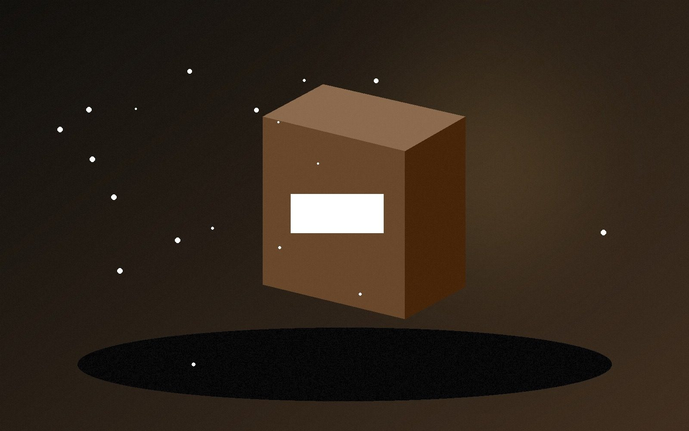
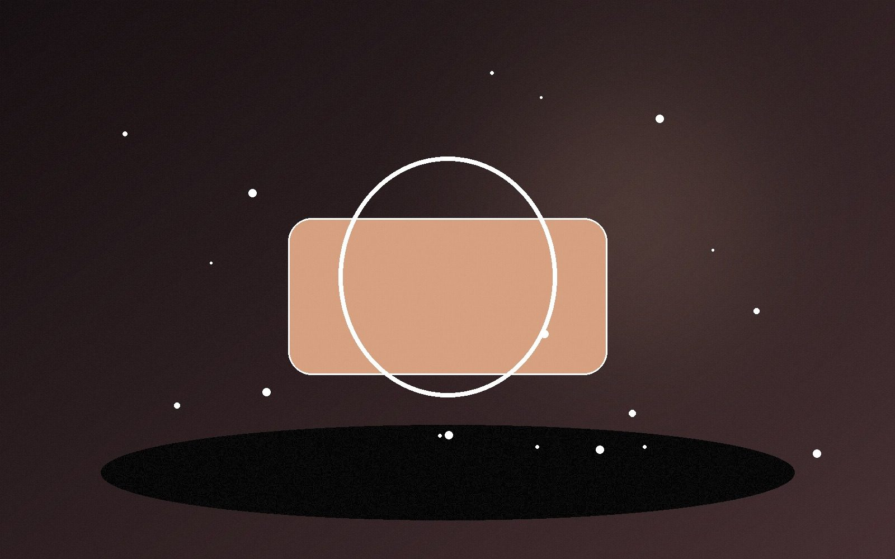
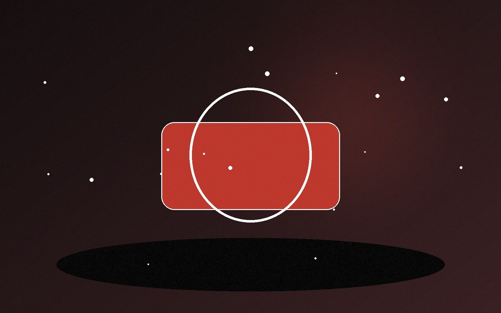
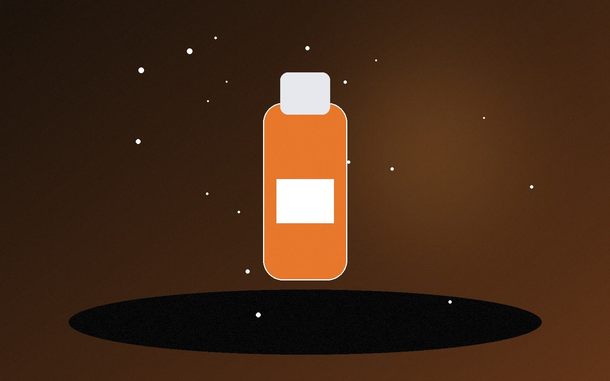

Front-End Development
Building page layouts, reusable sections, project cards, navigation, and browser experiences with semantic structure and responsive styling.
HTML5CSS3JavaScriptResponsive DesignAccessibility BasicsUI/UX
Front-End Developer Internship Candidate
I am Ashvin Vyas, a front-end developer internship candidate in Springfield, Illinois. I build responsive websites with HTML, CSS, JavaScript, GitHub Pages, UI/UX thinking, WordPress knowledge, AI-assisted development, and hands-on digital media experience.
Professional Summary
I am seeking a front-end developer internship where I can support responsive website builds, page updates, UI improvements, WordPress content, project pages, QA checks, and GitHub-based publishing.
My background in customer service, entrepreneurship, commercial photography, product visuals, and AI tools helps me think beyond code. I care about clear communication, useful design, clean presentation, and the business goal behind every page.
What I can contribute as an intern:
Technical Skills
Focused on practical website building, clean layouts, responsive design, content presentation, and modern development workflows.
Building page layouts, reusable sections, project cards, navigation, and browser experiences with semantic structure and responsive styling.
Comfortable with common web tools used for code editing, publishing, version control, content support, analytics, and team workflows.
Supporting websites with visuals, layout judgment, product content, and polished digital presentation.
Using AI tools to accelerate drafting, code exploration, debugging, design thinking, and content workflows.
Selected Projects
Each project shows a different part of my front-end learning path: business websites, responsive layouts, JavaScript interaction, UI structure, visual media, and GitHub Pages deployment.
A full responsive business website for web design, SEO, AI agents, digital marketing, branding, commercial photography, service areas, portfolio work, and a 64-article blog experience.
A polished salon website demo for hair design and skin care services, focused on local business presentation, service clarity, responsive layout, and professional visual style.
A photography service website for Indian wedding and event photography, built to present visual work, service credibility, contact paths, and responsive business branding.
A task-focused front-end app for organizing daily items, practicing DOM updates, interface behavior, and user-friendly state changes.
An interactive calculator project focused on user input, arithmetic logic, button states, and clean interface behavior.
A weather app project focused on data presentation, readable interface states, front-end behavior, and a simple user flow.
An interactive quiz project built to practice question flow, score logic, application state, and user feedback.
A responsive landing page focused on structure, visual hierarchy, calls to action, and conversion-friendly layout.
Digital Media Showcase
These samples connect my web development path with practical media skills: commercial photography, product photography, food visuals, and branded website content.




ATS Keywords: Front-End Developer Intern, HTML5, CSS3, JavaScript, Responsive Web Design, UI/UX Design, WordPress, Git, GitHub, Visual Studio Code, MySQL Basics, Google Analytics, Agile/Scrum, Photoshop, Illustrator, Adobe Premiere, Canva, Figma, commercial photography, product photography, food photography, cinematography, video editing, ChatGPT, Codex, Claude, GitHub Copilot, Google AI Studio, Replit AI, Revenucate, Vibe Coding tools.
Contact
I am available for internship conversations, portfolio reviews, and junior front-end development opportunities.